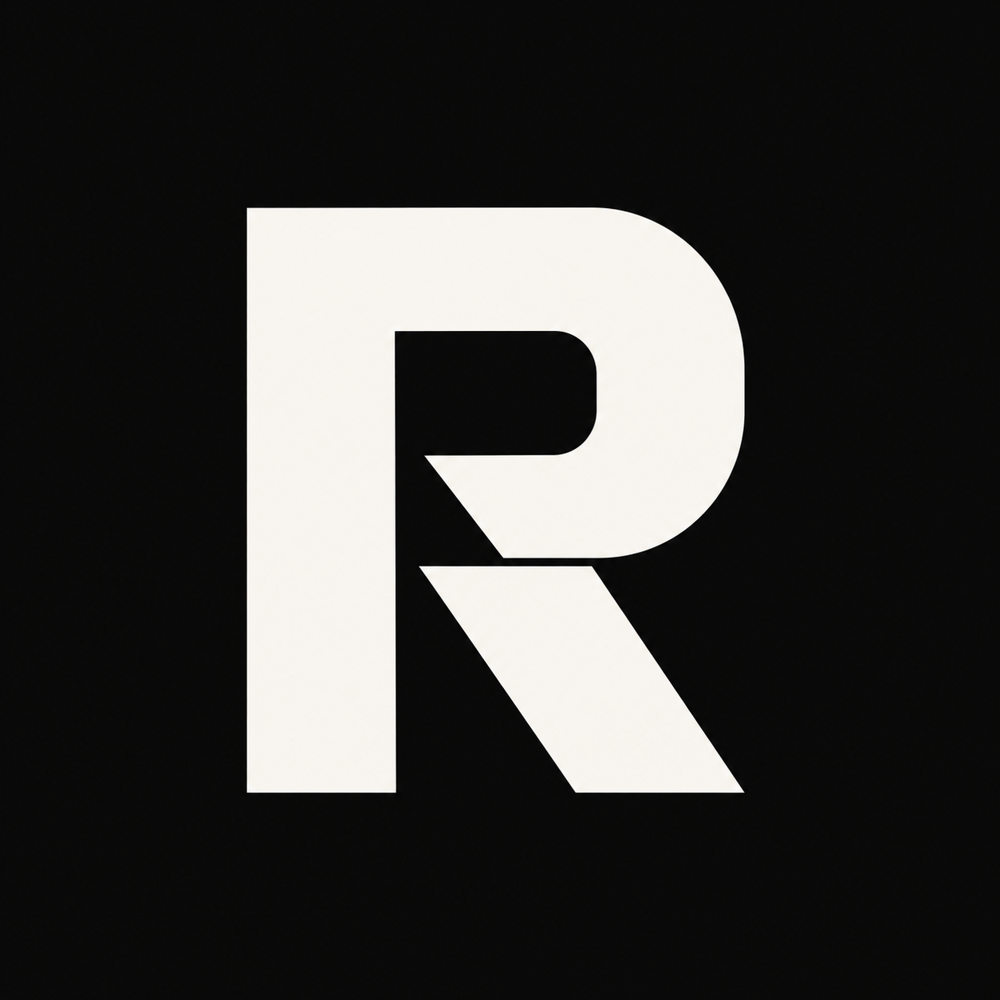
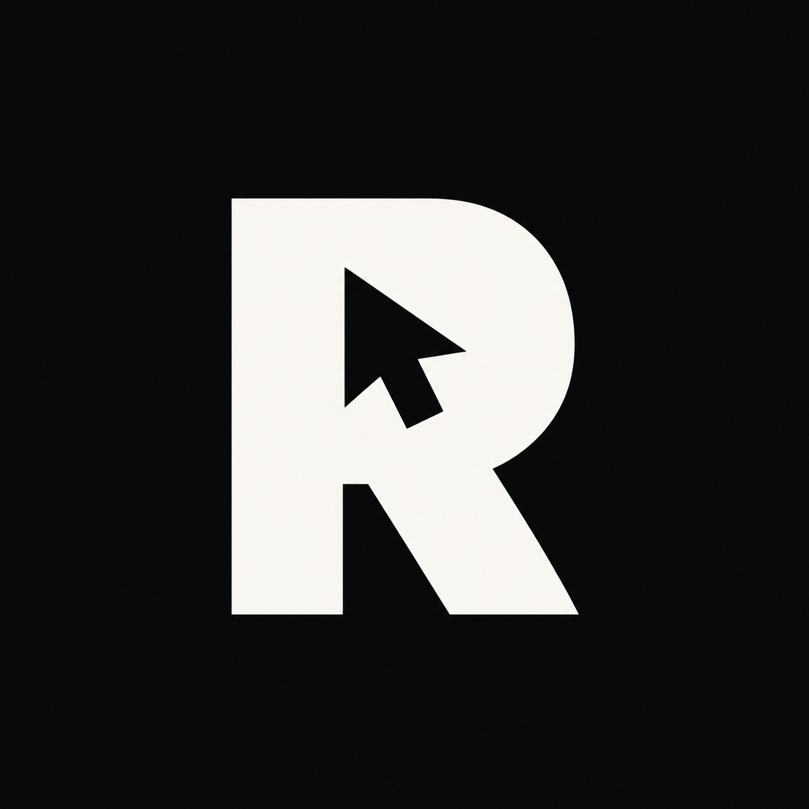
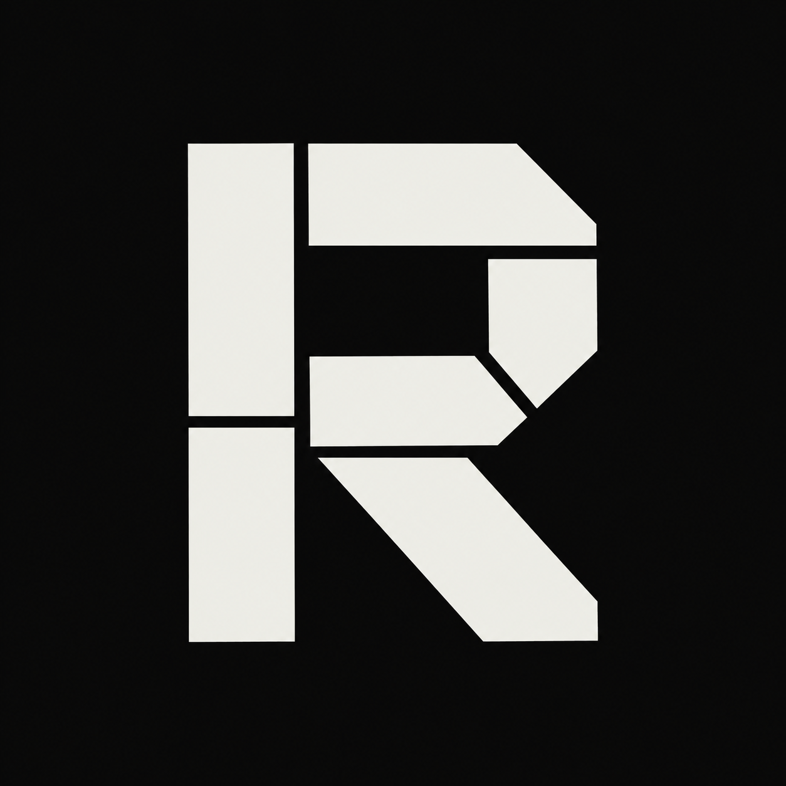
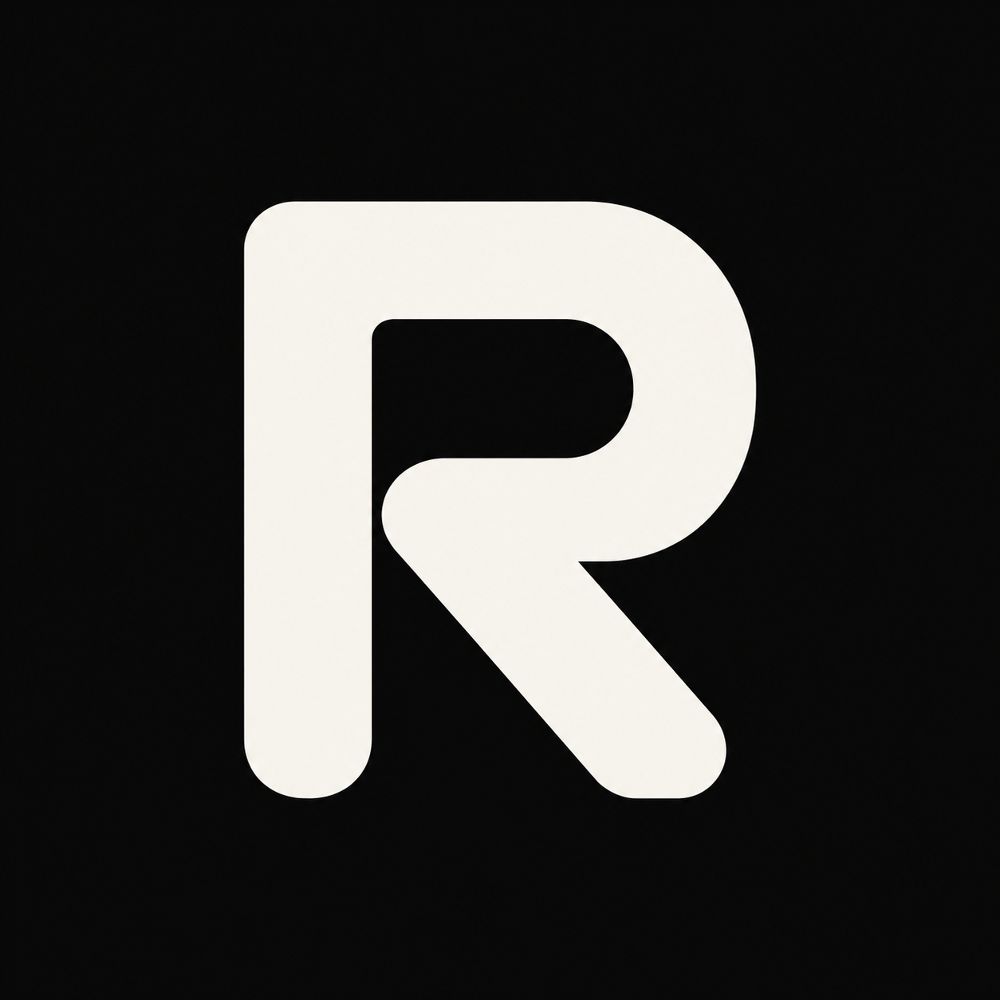
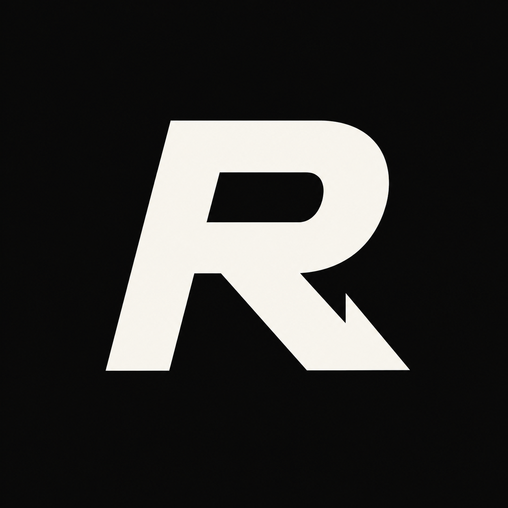
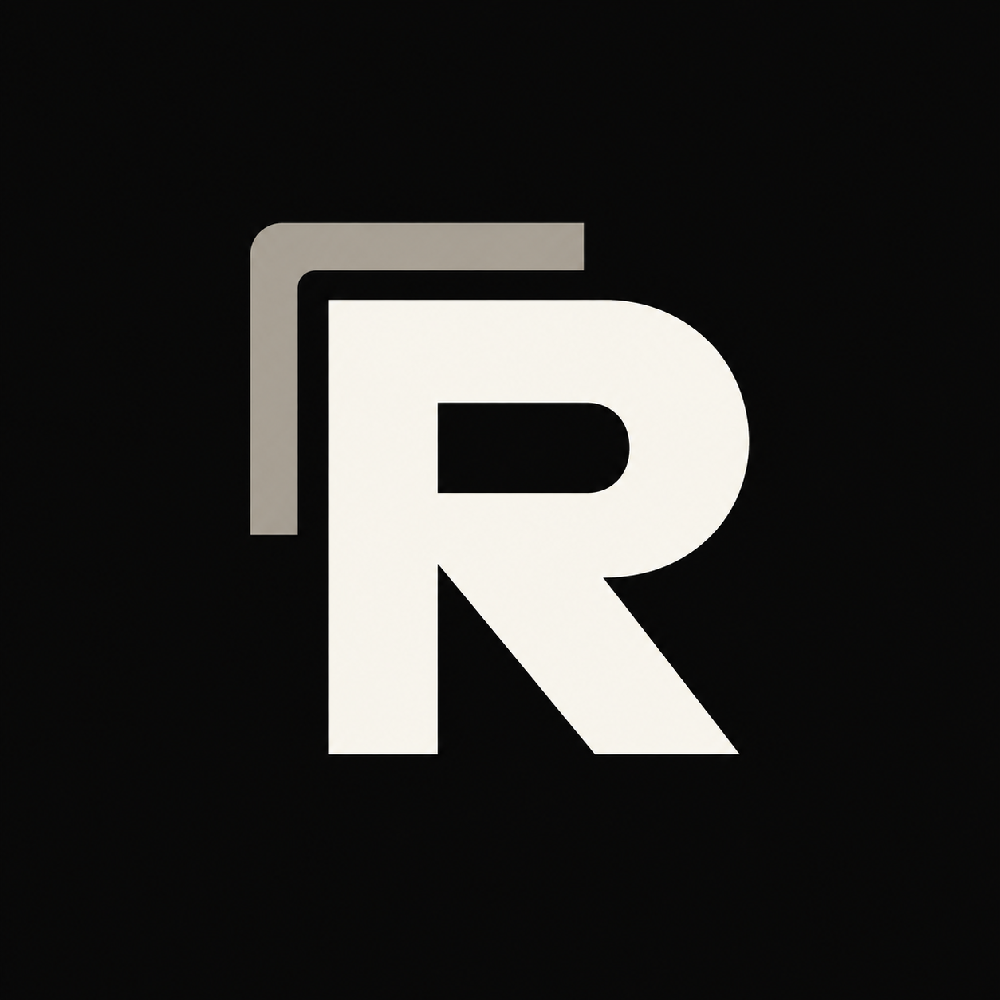
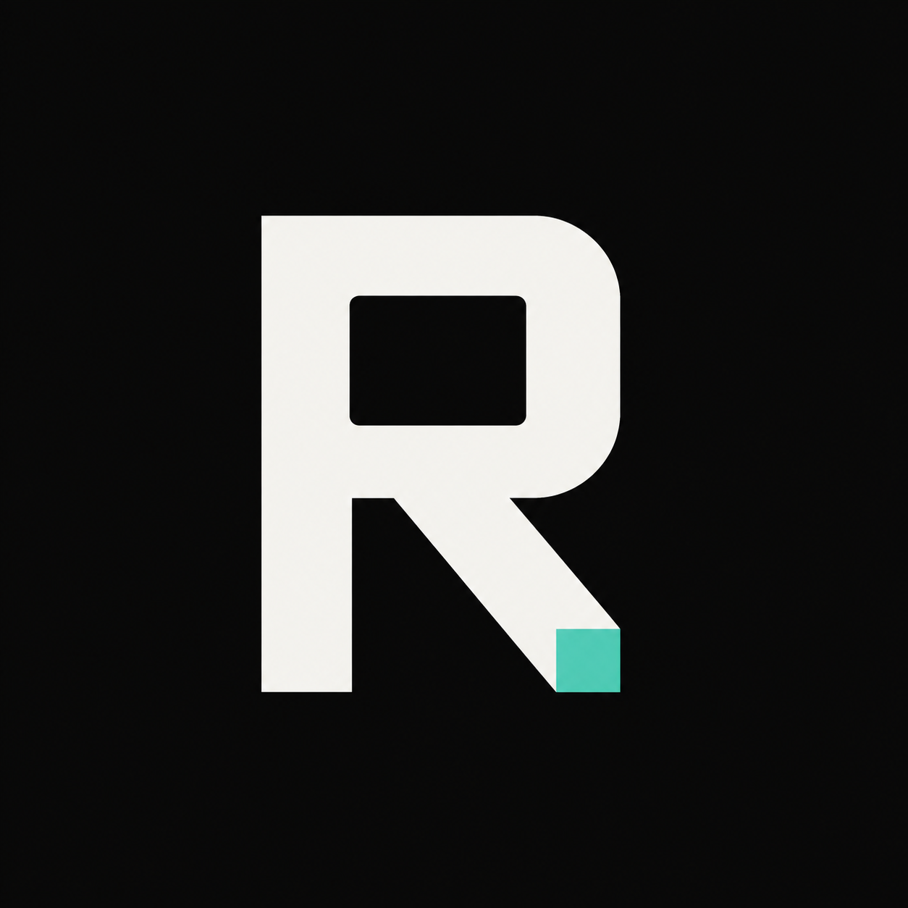
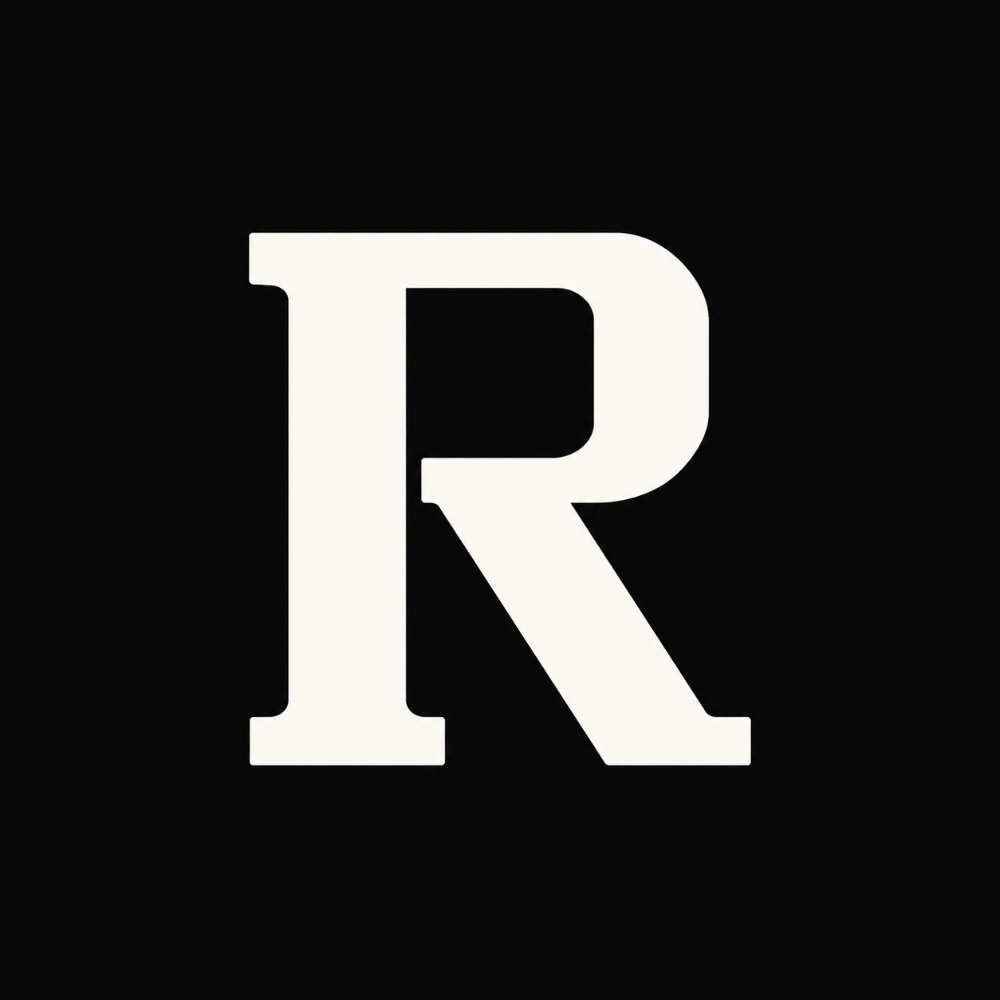
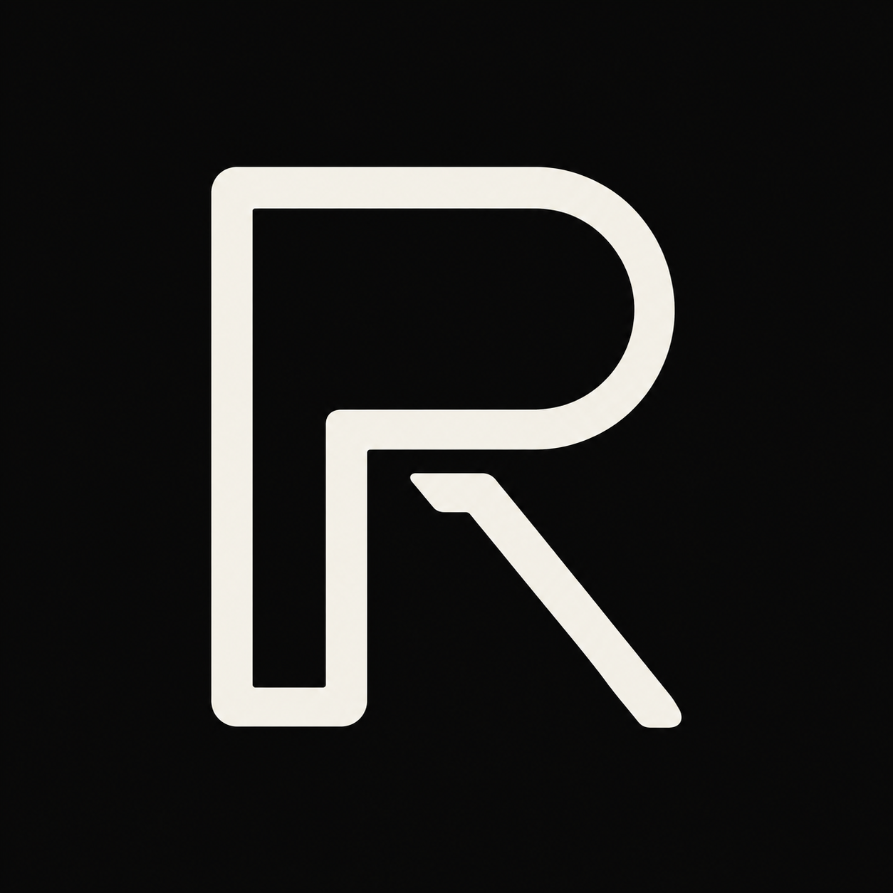

실제 사이트의 흑백 중심 화면과 절제된 골드·민트 포인트를 반영했습니다.이미지를 누르면 원본이 열립니다. 아래 작은 로고는 헤더 배치 비교용입니다.

절제된 절개와 단단한 실루엣
골드 선택 표시 · 추천

R 안에 숨겨진 선택 커서

유닛 조합을 연상시키는 모듈

둥근 모서리의 부드러운 인상

방향을 알려 주는 화살표

오버레이와 겹치는 패

민트 상태 표시 · 실시간 도구

세리프를 더한 편집 디자인

패널 테두리와 연결되는 선형